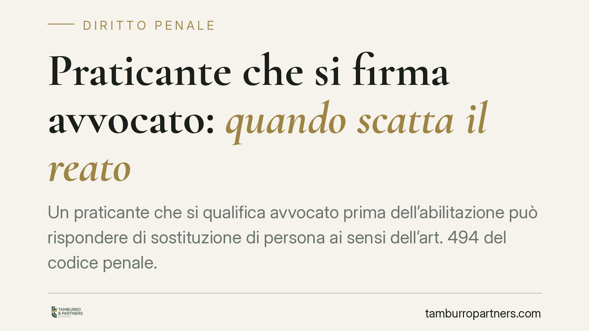

Praticante che si firma "avvocato": quando scatta il reato
Un praticante che si qualifica "avvocato" prima dell'abilitazione può rispondere di sostituzione di persona ai sensi dell'art. 494 del codice penale. La questione tocca la sfera tra pratica forense, patrocinio sostitutivo ed esercizio della professione. Vediamo cosa dice la giurisprudenza, quali sono i confini con reati affini e come muoversi in concreto.

Il caso e la qualificazione penale
La domanda ricorre più spesso di quanto si creda: il praticante che, per abitudine, comodità o disattenzione, si presenta o si firma come "avvocato" prima dell'abilitazione commette un reato?
Secondo un orientamento della Corte di Cassazione, la condotta può integrare il reato di sostituzione di persona. Non si tratta di una mera irregolarità deontologica: l'attribuzione a sé di una qualità professionale che non si possiede tocca la fede pubblica, cioè l'affidamento che i terzi ripongono nelle qualifiche dichiarate.
Gli estremi esatti della pronuncia richiamata dalla fonte non risultano puntualmente riportati. Per correttezza espositiva evitiamo affermazioni categoriche fondate su una sentenza non verificabile nel numero e nella sezione: ci limitiamo a dar conto dell'indirizzo, che va comunque calato nel singolo caso concreto.
Inquadramento normativo
L'art. 494 c.p. ("Sostituzione di persona") punisce con la reclusione fino a un anno chiunque, "al fine di procurare a sé o ad altri un vantaggio o di recare ad altri un danno, induce taluno in errore, sostituendo illegittimamente la propria all'altrui persona, o attribuendo a sé o ad altri un falso nome, o un falso stato, ovvero una qualità a cui la legge attribuisce effetti giuridici".
È proprio l'ultima ipotesi — l'attribuzione di una qualità a cui la legge attribuisce effetti giuridici — a rilevare qui. Il titolo di avvocato produce effetti giuridici precisi: capacità di rappresentanza tecnica, legittimazione a compiere atti riservati, iscrizione all'albo. Chi se ne appropria senza titolo attribuisce a sé una qualità che la legge disciplina.
Un punto merita cautela. L'art. 494 richiede un dolo specifico: la finalità di procurare un vantaggio o di arrecare un danno. Non si tratta di un elemento che si presume automaticamente dalla sola condotta. Va accertato in concreto. Sostenere che il vantaggio sia sempre insito nell'atto di firmarsi "avvocato" è una semplificazione: l'esistenza di quel fine specifico resta oggetto di prova nel procedimento.
La distinzione con i reati affini
Perché la condotta viene ricondotta all'art. 494 e non ad altre norme? Il confronto è utile.
L'art. 348 c.p. (esercizio abusivo di una professione) punisce chi esercita una professione per cui è richiesta una speciale abilitazione dello Stato senza possederla. Presuppone però il compimento di atti tipici e riservati alla professione: la sottoscrizione di atti processuali, la difesa in giudizio, la consulenza qualificata continuativa. Il solo qualificarsi "avvocato", senza svolgere attività riservate, non integra di per sé l'art. 348.
L'art. 498 c.p. (usurpazione di titoli o onori) sanziona chi abusivamente porta in pubblico titoli, decorazioni o insegne. È illecito depenalizzato, oggi trasformato in illecito amministrativo, e ha portata più circoscritta.
È in questo spazio che si colloca l'art. 494: la falsa qualifica indipendente dall'esercizio effettivo di atti riservati trova la propria sede naturale nella sostituzione di persona, perché ciò che si tutela è l'inganno sull'identità professionale, non l'atto abusivo in sé.
Praticante abilitato: cosa cambia
Non ogni praticante è nella stessa posizione. Il praticante abilitato al patrocinio sostitutivo può, entro i limiti di legge, esercitare determinate attività difensive. Ma anche in questo caso resta "praticante avvocato", non "avvocato": la qualifica va indicata correttamente. L'abilitazione al patrocinio non equivale all'iscrizione all'albo degli avvocati e non autorizza a spendere quel titolo.
Implicazioni pratiche
Per chi svolge la pratica forense la conseguenza è diretta: la qualifica indicata su firme, carte intestate, biglietti da visita, profili social ed email deve corrispondere alla posizione effettiva. Una firma imprecisa può diventare oggetto di contestazione penale, oltre che disciplinare, anche in assenza di un guadagno.
Per lo studio che ospita la pratica, l'attenzione alla corretta qualificazione dei collaboratori è parte della gestione del rischio.
Cosa fare in concreto
- Usa sempre la qualifica esatta: "praticante avvocato" o "praticante avvocato abilitato al patrocinio", mai "avvocato".
- Verifica firme e intestazioni: controlla email, carta intestata, profili professionali e social, eliminando diciture ambigue.
- Distingui il patrocinio sostitutivo: se sei abilitato, indica i limiti della tua legittimazione senza spendere il titolo di avvocato.
- Rettifica tempestivamente verso i terzi ogni indicazione errata già diffusa, per evitare che l'errore consolidi un affidamento.
- In caso di contestazione, è opportuno un tempestivo esame tecnico della posizione, valutando l'effettiva sussistenza del dolo specifico.
Ogni condominio ha una storia a sé.
Se gestisci un'amministrazione e vuoi un confronto su una specifica questione condominiale, scrivi allo studio. Ti rispondiamo entro un giorno lavorativo.